전기공사산업기사 (2004-09-05 기출문제)
1과목: 전기응용
1. 방의 가로 6[m], 세로가 9[m], 광원의 높이가 3[m]인 방의 실지수는?
- 162
- 18
- 1.8
- 1.2
(정답률: 68%)

2. 광속 F, 양단면에 빛이 없는 등휘도 완전확산 원주광원의 원주축과 읨의 각도를 이루는 방향의 광도는?
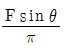
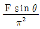
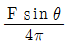
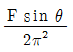
(정답률: 63%)
3. 비닐막 등의 접착에 주로 사용하는 가열방식은?
- 저항 가열
- 유도 가열
- 아아크 가열
- 유전 가열
(정답률: 87%)
4. 적외선 건조에 대한 설명으로 틀린 것은?
- 표면 건조시 효율이 좋다.
- 대류열을 이용한다.
- 온도 조절이 쉽다.
- 유지비가 적고 많은 장소가 필요하지 않다.
(정답률: 78%)
5. 부하 전류가 증가하면 가장 급격히 속도가 감소하는 전동기는?
- 직류 분권 전동기
- 직류 복권 전동기
- 3상 유도 전동기
- 직류 직권 전동기
(정답률: 90%)
6. 목표치가 미리 정해진 시간적 변화를 하는 경우 제어량을 그것에 추종시키기 위한 제어는?
- 프로그래밍 제어
- 정치 제어
- 추종 제어
- 비율 제어
(정답률: 58%)
7. 그림과 같은 전동차선의 조가법(早架法)은 다음중 어느 것인가?
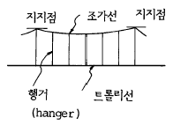
- 직접 조가식
- 단식 커테너리식
- 변형 Y형 단식 커테너리식
- 복식 커테너리식
(정답률: 78%)
8. 반도체에 광이 조사되면 전기저항이 감소되는 현상은?
- 열전능
- 광전효과
- 제백효과
- 홀 효과
(정답률: 80%)
9. 2차 전지에 속하는 것은?
- 적층전지
- 내한전지
- 공기전지
- 자동차용전지
(정답률: 81%)
10. 발열체로서의 구비 조건 중 틀린 것은?
- 내열성이 클 것
- 저항의 온도계수가 양(+)수로서 작을 것
- 열전성이 풍부하고 가공이 용이할 것
- 내식성이 작을 것
(정답률: 78%)
11. 궤조를 직류전차선 전류의 귀로로 사용할 때에는 폐색구간의 경계를 귀로전류가 흐르게 하여야 되는데 이와 같은 목적을 이루기 위하여 각 구간의 경계는 무엇으로 연결하여야 하는가?
- 열차단락감도
- 궤도회로
- 임피던스 본드
- 연동장치
(정답률: 57%)
12. 단상 교류식 전기철도에서 전압 불평형을 경감하기 위하여 사용되는 변압기 결선은?
- 흡상 변압기
- 단권 변압기
- 크로스 결선
- 스콧 결선
(정답률: 48%)
13. 어떤 종이가 반사율 50[%], 흡수율 20[%]이다. 여기에 1200[lm]의 광속을 조사하였을 때 투과광속[lm]은?
- 360
- 350
- 340
- 310
(정답률: 78%)
14. 물체의 위치, 각도 등을 제어하는 서보기구는 주로 어떤 제어법을 쓰는가?
- 프로그램 제어
- 추종 제어
- 정치 제어
- 비율 제어
(정답률: 40%)
15. 같은 색을 내는 흑체의 온도는?
- 복사온도
- 절대온도
- 색온도
- 휘도온도
(정답률: 64%)
16. 가로 10[m], 세로5[m]인 실내에 광속이 500[Im]인 전등 10개를 점등하였다. 조명률 0.5, 감광보상률 1.5일 때 실내의 평균조도[㏓]는?
- 7.5
- 20
- 33.3
- 133.3
(정답률: 68%)
17. 옥내 전반조명에서 바닥면의 조도를 균일하게 하기 위한 등간격과 등높이와의 관계식은? (단, 등간격은 S, 등높이는 H이다.)
- S≦0.5H
- S≦H
- S≦1.5H
- S≦2H
(정답률: 84%)
18. 전기로에 사용되는 전극재료의 구비조건이 아닌 것은?
- 전기 전도율이 클 것
- 열 전도율이 클 것
- 고온에 견디며 기계적 강도가 클 것
- 피열물과 화학작용을 일으키지 않을 것
(정답률: 76%)
19. 다음 중 전기저항 용접이 아닌 것은?
- 점 용접
- 불꽃 용접
- 심 용접
- 원자 수소 용접
(정답률: 70%)
20. 단상 유도 전동기의 브러시의 위치를 돌려주거나 고정자 권선의 단자접속을 바꾸어 주면 회전자의 회전방향이 바뀌는 것은?
- 분상 기동형
- 콘덴서 기동형
- 반발 기동형
- 셰이딩 코일형
(정답률: 46%)
2과목: 전력공학
21. 전력 사용의 변동상태를 알아보기 위한 것으로 가장 적당한 것은?
- 수용률
- 부등률
- 부하율
- 역률
(정답률: 26%)
22. 수전용 변전설비의 1차측에 설치하는 차단기의 용량은 어느 것에 의하여 정하는가?
- 공급측 전원의 크기
- 수전계약용량
- 수전전력과 부하율
- 부하설비용량
(정답률: 27%)
23. 전력 원선도의 가로축과 세로축은 각각 어느 것을 나타내는가?
- 최대전력-피상전력
- 유효전력-무효전력
- 조상용량-송전손실
- 송전효율-코로나손실
(정답률: 51%)
24. 철탑의 탑각 접지저항이 커지면 가장 크게 우려되는 문제점은?
- 역섬락 발생
- 코로나 증가
- 정전 유도
- 차폐각 증가
(정답률: 40%)
25. 송전선로의 개폐조작시 발생하는 이상전압에 관한 상황으로 옳은 것은?
- 개폐 이상전압은 회로를 개방할 때 보다 폐로할 때 더 크다.
- 개폐 이상전압은 무부하시보다 전부하일 때 더 크다.
- 가장 높은 이상전압은 무부하 송전선의 충전전류를 차단할 때이다.
- 개폐 이상전압은 상규 대지전압의 6배, 시간은 2∼3초이다.
(정답률: 18%)
26. 조상설비라고 할 수 없는 것은?
- 동기조상기
- 진상 콘덴서
- 상순표시기
- 분로리액터
(정답률: 35%)
27. 송전계통의 중성점을 접지하는 목적으로 옳지 않은 것은?
- 전선로의 대지전위의 상승을 억제하고 전선로와 기기의 절연을 경감시킨다.
- 소호리액터접지방식에서는 1선지락시 지락점 아크를 빨리 소멸시킨다.
- 차단기의 차단용량의 절연을 경감시킨다.
- 지락고장에 대한 계전기의 동작을 확실하게 하여 신속하게 사고 차단을 한다.
(정답률: 15%)
28. 정격용량 P[kVA]의 변압기에서 늦은 역률 cosθ1의 부하에 P[kVA]를 공급하고 있다. 합성역률을 cosθ2로 개선하 여 이 변압기의 전 용량까지 전력을 공급하려고 한다. 소요 콘덴서의 용량은 몇 kVA 인가?
- Pcosθ1(tanθ1-tanθ2)
- Pcosθ2(cosθ1-cosθ2)
- P(tanθ1-tanθ2)
- P(cosθ1-cosθ2)
(정답률: 13%)
29. 전력용 조상설비 중 무효전력 흡수를 진상과 지상 양용으로 할 수 있는 것은?
- 동기조상기
- 분로리액터
- 전력용콘덴서
- 직렬리액터
(정답률: 32%)
30. 가공 전선로의 전선 진동을 방지하기 위한 방법으로 옳지 않은 것은?
- 토쇼널 댐퍼(torsional damper)의 설치
- 스프링 피스톤 댐퍼와 같은 진동 제지권을 설치
- 경동선을 ACSR로 교환
- 클램프나 전선 접촉기 등을 가벼운 것으로 바꾸고 클램프 부근에 적당히 전선을 첨가
(정답률: 25%)
31. 외뢰(外雷)에 대한 주 보호장치로서 송전계통의 절연협조의 기본이 되는 것은?
- 선로
- 변압기
- 피뢰기
- 변압기 붓싱
(정답률: 48%)
32. 그림과 같은 3상 송전계통의 송전전압은 22kV이다. 지금 1점 P에서 3상 단락했을 때의 발전기에 흐르는 단락전류는 약 몇 A 인가?
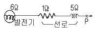
- 725
- 1150
- 1990
- 3725
(정답률: 30%)
33. 송전선로의 정전용량은 등가선간거리 D 가 증가하면 어떻게 되는가?
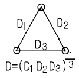
- 증가한다.
- 감소한다.
- 변하지 않는다.
- 기하급수적으로 증가한다.
(정답률: 25%)
34. 3상3선식 선로에 있어서 각 선의 대지 정전용량이 Cs[F], 선간 정전용량이 Cm[F]일 때 1선의 작용 정전용량은 얼마인가?
- 2Cs+Cm[F]
- 3Cs+Cm[F]
- Cs+3Cm[F]
- Cs+2Cm[F]
(정답률: 44%)
35. 선로의 부하가 균일하게 분포되어 있을 때 배전선로의 전력손실은 이들의 전부하가 선로의 말단에 집중되어 있을때에 비하여 어느 정도가 되는가?
- 1/5
- 1/4
- 1/3
- 1/2
(정답률: 28%)
36. 영상변류기를 사용하는 계전기는?
- 과전류계전기
- 과전압계전기
- 접지계전기
- 차동계전기
(정답률: 33%)
37. 연가를 하는 주된 목적은?
- 유도뢰의 방지
- 직격뢰의 방지
- 선로의 미관상
- 선로정수의 평형
(정답률: 42%)
38. 송전선에서 저항과 누설 컨덕턴스를 무시한 개략 계산에서 송전선의 특성임피던스의 값은 보통 몇 Ω 정도인가?
- 100∼300
- 300∼500
- 500∼700
- 700∼900
(정답률: 30%)
39. 급수의 엔탈피 130kcal/㎏, 보일러 출구 과열증기 엔탈피 830kcal/㎏, 터빈 배기 엔탈피 550kcal/㎏인 랭킨사이클 의 열사이클 효율은?
- 0.2
- 0.4
- 0.6
- 0.8
(정답률: 23%)
40. 수차의 특유속도에 대한 설명으로 옳은 것은?
- 특유속도가 크면 경부하시의 효율 저하는 거의 없다.
- 특유속도가 큰 수차는 러너의 주변속도가 일반적으로 적다.
- 특유속도가 높다는 것은 수차의 실용속도가 높은 것을 의미한다.
- 특유속도가 높다는 것은 수차 러너와 유수와의 상대 속도가 빠르다는 것이다.
(정답률: 31%)
3과목: 전기기기
41. 지름 0.2[m], 속도1800[rpm]인 전기자의 주변 속도[m/sec]는?
- 18.84
- 12.56
- 10.42
- 6.28
(정답률: 36%)
42. 10극, 3상 유도전동기가 있다. 회전자도 3상이고, 정지시의 2차 1상의 전압이 150[V]이다. 이 회전자를 회전자계와 반대방향으로 400[rpm] 회전시키면 2차 전압[V]은 약 얼마인가?(단, 1차 전원 주파수는 50[Hz]이다.)
- 150
- 200
- 250
- 300
(정답률: 17%)
43. 주파수 f, 권수 N, 최대자속 øm인 변압기의 유기 전압의 실효값은?
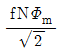
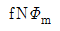
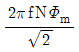
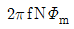
(정답률: 17%)
44. 다음에서 동기전동기의 V곡선에 대한 설명중 맞지 않는 것은?
- 횡축에 여자전류를 나타낸다.
- 종축에 전기자전류를 나타낸다.
- 동일출력에 대해서 여자가 약한 경우가 뒤진 역률 이다.
- V곡선의 최저점에는 역률이 0(%)이다.
(정답률: 40%)
45. 단권 변압기에서 고압측을 Vh, 저압측을 Vℓ , 2차 출력을 P,단권 변압기의 자기용량을 Pin 이라 하면 Pin/P는?
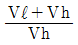
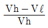
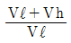
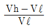
(정답률: 26%)
46. 단상변압기 3대로 Y-Y결선했을 때 잘못된 설명은?
- 상전압이 선간전압의 √3 배이므로 절연이 용이하다.
- 제3고조파 전류가 흐르며 유도장해를 일으킨다.
- 중성점 접지가 가능하다.
- 역 V결선이 가능하다.
(정답률: 23%)
47. 변압기 권선의 층간 절연시험은?
- 가압시험
- 유도시험
- 충격시험
- 단락시험
(정답률: 19%)
48. 직류발전기에 있어서 계자 철심에 잔류자기가 없어도 발전되는 직류기는?
- 분권발전기
- 직권발전기
- 타여자발전기
- 복권발전기
(정답률: 24%)
49. 다음 중 교류에서 직류를 얻는 방법이 아닌 것은?
- M-G set
- 회전변류기
- 수은정류기
- 셀신장치
(정답률: 20%)
50. 3상, 6극, 슬롯수 54의 동기발전기가 있다. 어떤 전기자 코일의 두변이 제 1슬롯과 제 8슬롯에 들어있다면 단절권계수는 얼마인가?
- 약 0.9397
- 약 0.9567
- 약 0.9837
- 약 0.9117
(정답률: 31%)
51. 성층하는 규소강판의 표면을 절연 피막처리 하는 이유로서 알맞는 것은?
- 히스테리시스손을 작게 하기 위해
- 자속을 보다 잘 통하게 하기 위해
- 와전류에 의한 손실을 작게 하기 위해
- 절연성을 높이기 위해
(정답률: 14%)
52. 직류전동기의 설명 중 옳은 것은?
- 전동차용 전동기는 차동복권 전동기이다.
- 직권 전동기가 운전 중 무부하로 되면 위험 속도가 된다.
- 부하변동에 대하여 속도변동이 가장 큰 직류전동기는 분권전동기이다.
- 직류직권 전동기는 속도조정이 어렵다.
(정답률: 27%)
53. 반파정류회로에서 직류전압 100[V]를 얻는데 필요한 변압기의 역전압 첨두치는 약 몇 [V]인가? (단, 부하는 순저항으로 하고 변압기내의 전압강하는 무시하며, 정류기내의 전압강하를 15[V]로 한다.)
- 181
- 361
- 512
- 722
(정답률: 23%)
54. 10[HP] 4극 60[Hz] 농형 3상 유도전동기의 전 전압 기동 토크가 전부하 토크의 1/3일때, 탭전압이 1/ 3 인 기동 보상기로 기동하면 그 기동 토크는 전부하 토크의 몇 배가 되겠는가?
- 3 배
- 1/3배
- 1/9배
- 1/ 3배
(정답률: 26%)
55. 동기 발전기의 병렬 운전 중 A기의 부하 분담을 크게 하려면?
- B기의 속도 증대
- B기의 계자 증대
- A기의 계자 증대
- A기의 속도 증대
(정답률: 14%)
56. 교류정류자 전동기의 설명 중 틀린 것은?
- 높은 효율과 연속적인 속도제어가 가능하다.
- 회전자는 정류자를 갖고, 고정자는 집중 또는 분포 권선이다.
- 기동시 브러시 이동만으로 큰 기동 토크를 얻는다.
- 정류작용은 직류기와 같이 간단히 해결된다.
(정답률: 30%)
57. 10[kW], 3상,200[V] 유도전동기의 전부하 전류[A]는? (단, 효율 및 역률 85[%])
- 60
- 80
- 40
- 20
(정답률: 19%)
58. 구조가 회전 계자형으로 된 발전기는?
- 동기 발전기
- 직류 발전기
- 유도 발전기
- 분권 발전기
(정답률: 18%)
59. 직류 분권 전동기의 공급 전압 극성을 반대로 하면 회전 방향은?
- 변하지 않는다.
- 반대로 된다.
- 발전기로 된다.
- 회전하지 않는다.
(정답률: 28%)
60. 다음 중 스테핑 모터의 구조 형이 아닌 것은?
- 하이브리드 형(hybrid type)
- 영구자석 형(permanent-magnet type)
- 가변리럭턴스 형(Variable-Reluctance type)
- 회전전기자 형(revolving armature type)
(정답률: 25%)
4과목: 회로이론
61.
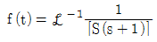
은?- 1+ε-t
- 1-ε-t
- 1/1-ε-t
- 1/1+ε-t
(정답률: 25%)
62. 주기적인 구형파의 신호는 그 성분이 어떻게 되는가?
- 교류합성을 갖지 않는다.
- 직류분만으로 합성된다.
- 무수히 많은 주파수의 합성이다.
- 성분분석이 불가능하다.
(정답률: 22%)
63. 그림의 사다리꼴 회로에서 출력전압 VL[V]은?
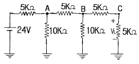
- 2
- 3
- 4
- 6
(정답률: 29%)
64. 전기회로의 입력을 v1 출력을 v2 라고 할때 전달함수는? (단, S=jω 이다.)
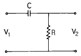
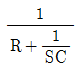
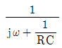
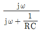
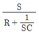
(정답률: 37%)
65. 비접지 3상 Y부하에서 각 선전류를 Ia, Ib, Ic라 할 때 전류의 영상분 Io는?
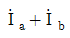
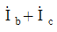
- 0
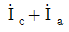
(정답률: 40%)
66. R-L-C 직렬회로에서 L=8×10-3[H], C=2×10-7[F]이다. 임계진동이 되기 위한 R 값은?
- 0.01[Ω]
- 100[Ω]
- 200[Ω]
- 400[Ω]
(정답률: 17%)
67. 시간지연 요인을 포함한 어떤 특정계가 다음 미분방정식으로 표현된다. 이 계의 전달함수를 구하면?
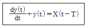
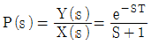
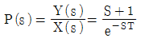
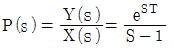
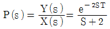
(정답률: 21%)
68. 그림과 같은 회로가 정저항회로가 되기 위한 R 의 값은 얼마인가?
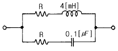
- 200[Ω]
- 2[Ω]
- 2×10-2[Ω]
- 2×10-4[Ω]
(정답률: 24%)
69. 전류의 크기가 i1=30√2 sinωt[A], i2=40√2 sin(ωt+π/2)일 때 i1+i2 의 실효값은 몇[A] 인가?
- 50
- 50√2
- 70
- 70√2
(정답률: 17%)
70. 3상 유도전동기의 출력이 5[HP], 전압 200[V], 효율 90[%], 역률 85[%]일때, 이 전동기에 유입되는 선전류는 약 몇 [A]인가?
- 4
- 6
- 8
- 14
(정답률: 23%)
71. 3상 부하가 Y결선되었다. 각상의 임피던스 Za=3[Ω], Zb=3[Ω], Zc=j3[Ω]이다. 이 부하의 영상 임피던스[Ω]는?
- 6-j3
- 2+j
- 3-j3
- 3+j6
(정답률: 24%)
72. 그림과 같은 2 단자망에서 구동점 임피던스를 구하면?
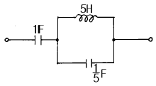
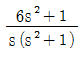
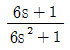
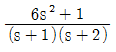
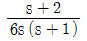
(정답률: 19%)
73. 저항 4[Ω], 주파수 50[Hz]에 대하여 4[Ω]의 유도리액턴스와 1[Ω]을 갖는 용량 리액턴스가 직렬 연결된 회로에 100[V]의 교류전압을 인가할 때의 무효전력[VAR]은?
- 1000
- 1200
- 1400
- 1600
(정답률: 18%)
74. R-L-C 직렬회로에서 시정수의 값이 작을수록 과도현상이 소멸되는 시간은 어떻게 되는가?
- 짧아진다.
- 관계없다.
- 길어진다.
- 과도상태가 없다.
(정답률: 33%)
75. f(t)=t2의 라플라스 변환은?
- 2/S4
- 2/S3
- 2/S2
- 2/S
(정답률: 15%)
76. 대칭 6상식의 성형결선의 전원이 있다. 상전압이 100[V]이면 선간전압[V]은?
- 600
- 300
- 220
- 100
(정답률: 14%)
77. 어떤 회로의 전압 및 전류가 V=10∠60° , I=5∠30° 일때 이 회로의 임피던스 Z[Ω]은?
- √3 +j
- √3 -j
- 1+j√3
- 1-j√3
(정답률: 27%)
78. 선형회로와 가장 관계가 있는 것은?
- 중첩의 원리
- 테브낭의 정리
- 키로히호프의 법칙
- 파라데이의 전자 유도법칙
(정답률: 22%)
79. 일반적으로 대칭 3상 회로의 전압, 전류에 포함되는 전압전류의 고조파는 n을 임의로 정수로 하여 (3n+1)일 때의 상회전은 어떻게 되는가?
- 정지상태
- 각상 동위상
- 상회전은 기본파의 반대
- 상회전은 기본파의 동일
(정답률: 32%)
80. 반파 및 정현대칭의 왜형파의 푸리에 급수에서 옳게 표현된 것은?
- an의 우수항만 존재한다.
- an의 기수항만 존재한다.
- bn의 우수항만 존재한다.
- bn의 기수항만 존재한다.
(정답률: 31%)
5과목: 전기설비
81. 저압 또는 고압의 가공 전선로와 기설 가공 약전류 전선로가 병행할 때 유도작용에 의한 통신상의 장해가 생기지 않도록 전선과 기설 약전류 전선간의 이격거리는 몇 m이상이어야 하는가? (단, 전기철도용 급전선과 단선식 전화선로는 제외한다.)
- 2
- 3
- 4
- 6
(정답률: 29%)
82. 특별고압 가공전선로를 시가지에 시설하는 경우, 지지물로 사용할 수 없는 것은?
- 목주
- 철탑
- 철근콘크리트주
- 철주
(정답률: 21%)
83. 직류 전차선의 시설방법이 아닌 것은?
- 가공방식
- 강체복선식
- 제3궤조방식
- 지중조가선방식
(정답률: 18%)
84. 교통신호등회로의 사용전압은 몇 V 이하이어야 하는가?
- 60
- 110
- 220
- 300
(정답률: 33%)
85. 22.9kV 중성선 다중접지 계통에서 각 접지선을 중성선으로부터 분리하였을 경우의 매 1km 마다의 중성선과 대지간의 합성 전기저항값은 몇 Ω 이하이어야 하는가?
- 30
- 50
- 100
- 150
(정답률: 21%)
86. 석유류를 저장하는 장소의 저압 옥내 전기설비에 사용할 수 없는 배선 공사방법은?
- 합성수지관공사
- 케이블공사
- 금속관공사
- 애자사용공사
(정답률: 26%)
87. 특별고압 계기용변성기의 2차측에 접지공사를 시행할 때 그 접지저항의 값은 몇 牆 이하로 유지하여야 하는가?
- 5
- 10
- 75
- 100
(정답률: 20%)
88. 가공 전선로에 사용하는 지지물의 강도 계산에 적용하는 병종풍압하중은 갑종풍압하중의 몇 % 를 기초로 하여 계산한 것인가?
- 30
- 50
- 80
- 110
(정답률: 28%)
89. 시가지에 시설하는 특별고압 가공전선로의 지지물이 철탑이고 전선이 수평으로 2 이상 있는 경우에 전선 상호간의 간격이 4m 미만인 때에는 특별고압 가공 전선로의 경간은 몇 m 이하이어야 하는가?
- 100
- 150
- 200
- 250
(정답률: 16%)
90. 변압기의 안정권선이나 유휴권선 또는 전압조정기의 내장 권선을 이상전압으로부터 보호하기 위하여 특히 필요할 경우에 그 권선에 접지공사를 할 때에는 제 몇 종 접지공사를 하여야 하는가?
- 제1종접지공사
- 제2종접지공사
- 제3종접지공사
- 특별제3종접지공사
(정답률: 13%)
91. 폭연성 분진 또는 화약류의 분말이 전기설비가 발화원이되어 폭발할 우려가 있는 곳에 시설하는 저압 옥내 전기설비의 배선공사를 할 수 있는 것은?
- 애자사용공사
- 캡타이어케이블공사
- 합성수지관공사
- 금속관공사
(정답률: 30%)
92. 고압 또는 특별고압 전로 중 기계기구 및 전선을 보호하기 위하여 필요한 곳에 시설하여야 하는 것은?
- 콘덴서형 변성기
- 동기조상기
- 과전류차단기
- 영상변류기
(정답률: 33%)
93. 수소냉각식 발전기 및 이에 부속하는 수소냉각장치에 관한 기술기준이 잘못 표현된 것은?
- 발전기는 기밀구조의 것이고 또한 수소가 대기압에서 폭발하는 경우에 생기는 압력에 견디는 강도를 가지는 것일 것
- 발전기 안의 수소의 순도가 70% 이하로 저하한 경우에 이를 경보하는 장치를 시설할 것
- 발전기안의 수소의 온도를 계측하는 장치를 시설할 것
- 발전기안의 수소의 압력을 계측하는 장치 및 그 압력이 현저히 변동한 경우에 이를 경보하는 장치를 시설할 것
(정답률: 39%)
94. 특별고압 가공 전선로의 지지물에 시설하는 통신선 또는 이에 직접 접속하는 가공 통신선의 높이는 철도 또는 궤도를 횡단하는 경우에는 궤조면상 몇 m 이상으로 하여야 하는가?
- 5.0
- 5.5
- 6.0
- 6.5
(정답률: 39%)
95. 고압 가공전선에 경알루미늄선을 사용하는 경우 안전률은 최소 얼마 이상이 되는 이도로 시설하여야 하는가?
- 2.0
- 2.2
- 2.5
- 4.0
(정답률: 23%)
96. 사용전압이 161000V인 가공 전선로를 시가지내에 시설할 때 전선의 지표상의 높이는 몇 m 이상이어야 하는가?
- 8.65
- 9.56
- 10.47
- 11.56
(정답률: 22%)
97. 조상기의 보호장치로서 내부 고장시에 반드시 자동 차단 되도록 하는 장치를 하여야 하는 조상기 용량은 몇 kVA 이상인가?
- 5000
- 7500
- 10000
- 15000
(정답률: 31%)
98. 아크용접장치의 용접변압기에서 용접전극에 이르는 부분에 사용할 수 없는 전선은?
- 2종 캡타이어케이블
- 3종 캡타이어케이블
- 용접용케이블
- 비닐캡타이어케이블
(정답률: 25%)
99. 저압전로에 사용하는 정격전류 50A의 배선용차단기에 100A의 전류를 통했을 경우 몇 분안에 자동적으로 동작 하여야 하는가?
- 2
- 4
- 6
- 8
(정답률: 12%)
100. "관등회로"의 정의에 해당되는 것은?
- 네온변압기로부터 전구선까지의 전로
- 광고용 네온싸인의 외부 배선
- 수은등을 이용한 가로등의 전로
- 방전등용 안정기로부터 방전관까지의 전로
(정답률: 50%)